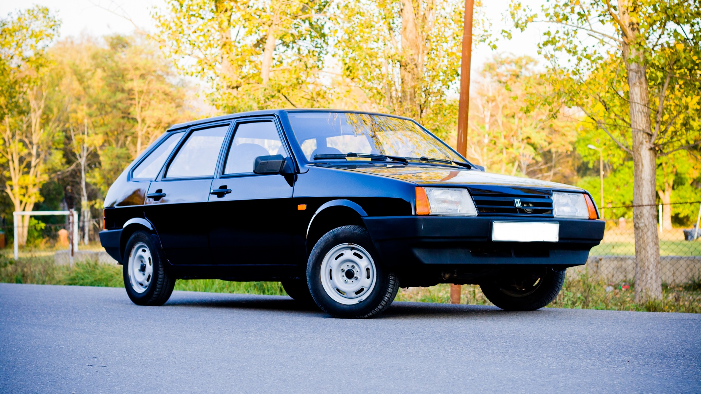
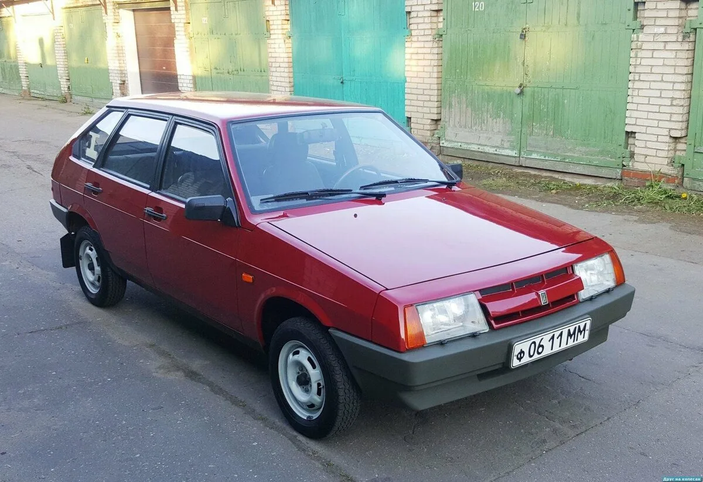
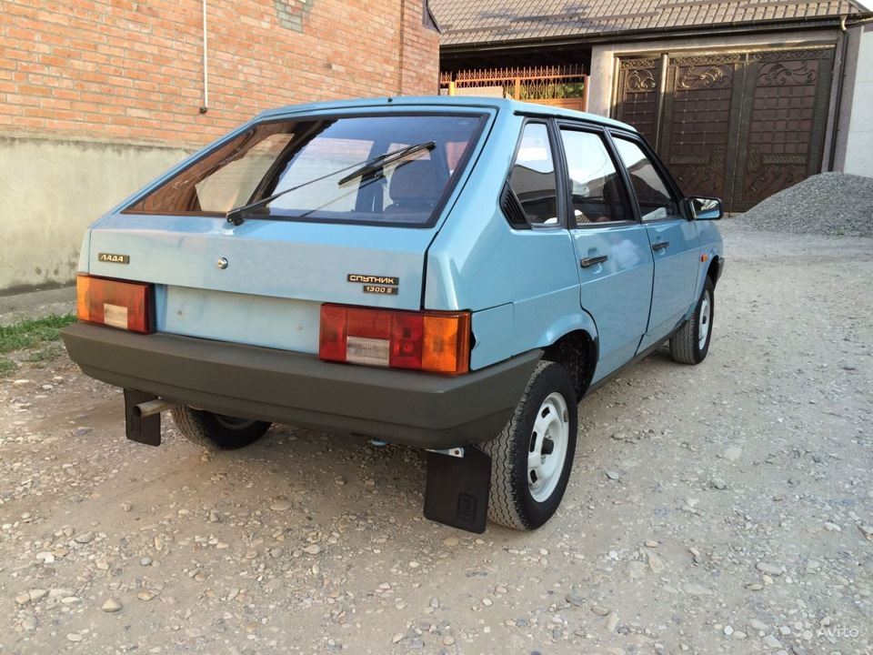
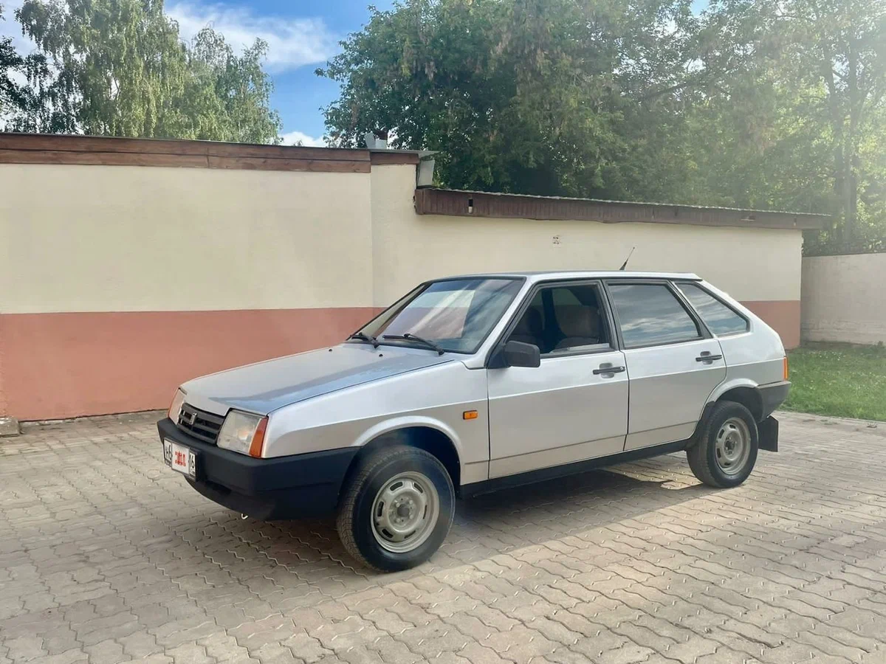
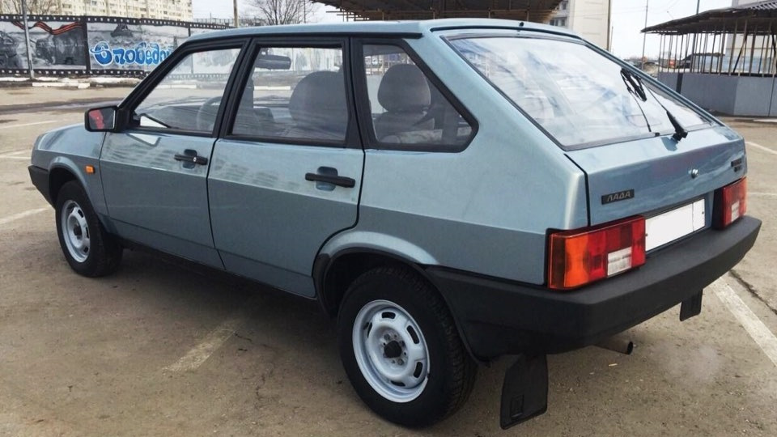
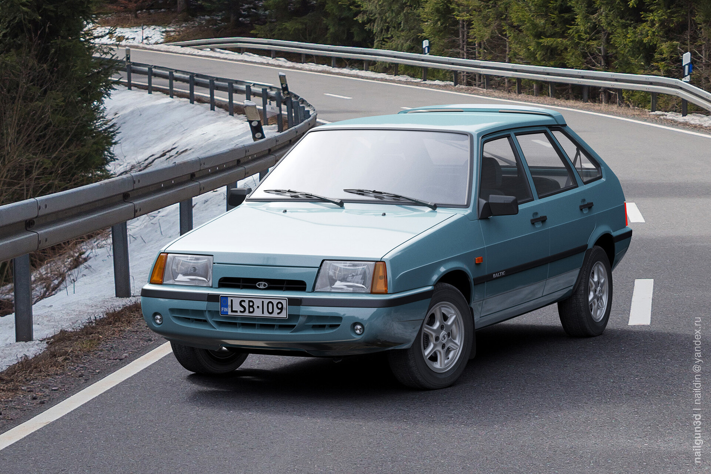
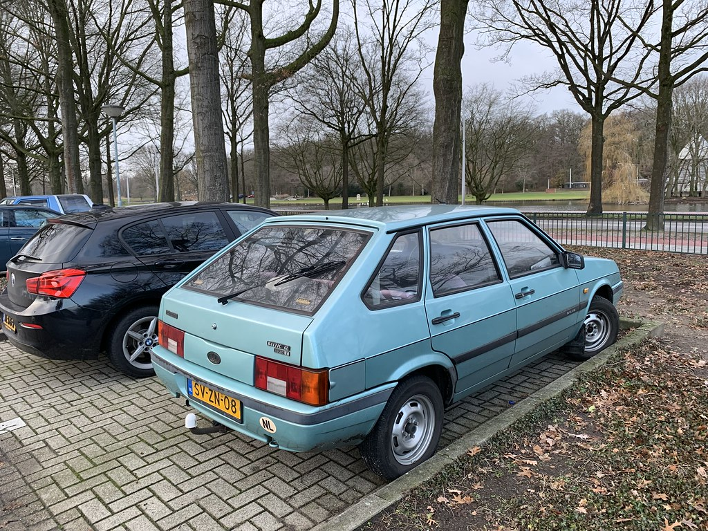
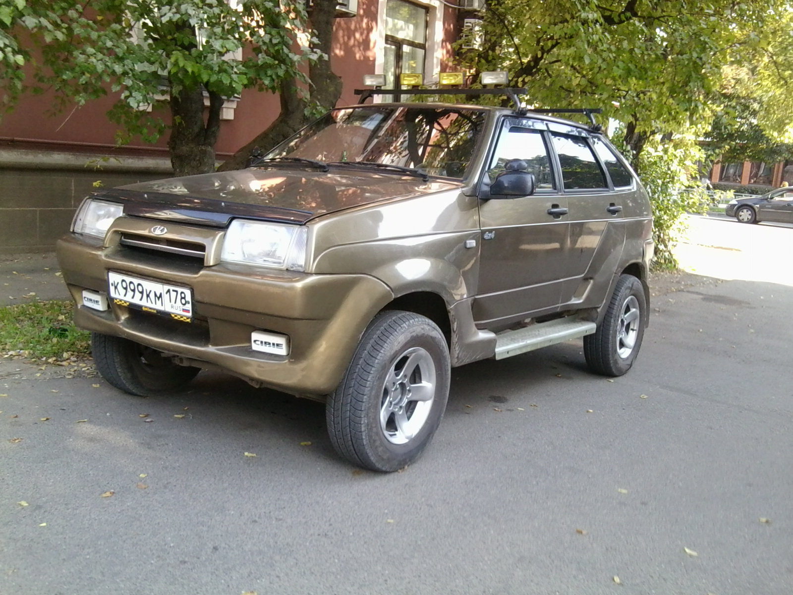
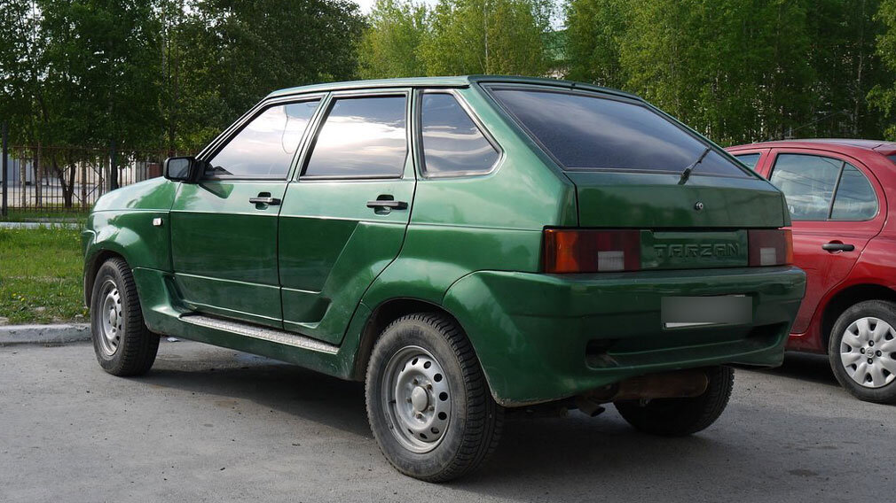

ВАЗ-2109 «Спутник» (простореч. название «девятка») — советский спортивный переднемоторный автомобиль II группы малого класса с кузовом типа хетчбэк. Разработан и серийно выпускался на Волжском автомобильном заводе в 1987—2004 годах. С 2004 до конца 2011 года вариант ВАЗ-21093 собирался из машинокомплектов на Украине на заводе «ЗАЗ». Представляет собой пятидверную модификацию ВАЗ-2108 в семействе моделей Лада «Спутник».
ВАЗ-2109 начали выпускать в 1987 году. Первоначально автомобиль оснащался рядными 4-цилиндровыми и 8-клапанными карбюраторными бензиновыми двигателями объёмом 1100, 1300 и 1500 см³.
В 1991 году был внедрён новый дизайн «передка» машины, с так называемыми «длинными» передними крыльями и капотом. На экспортных рынках на модель опционально устанавливали кондиционер, электростеклоподъёмники, ГУР, люк в крыше, катализатор и другие опции.
Кузов ВАЗ-2109 — двухобъёмный, типа хетчбэк. Передняя подвеска у ВАЗ-2109 полностью независимая, типа Макферсон без подрамника,рычаг подвески крепится напрямую к лонжерону через кронштейн. Задняя подвеска полунезависимая с поперечной балкой, работающей на кручение, по конструкции схожая со многими другими переднеприводными автомобилями тех лет. ВАЗ-2109 оснащался механической трансмиссией, в состав которой входили:
На протяжении выпуска ВАЗ-2109 было выпущено несколько модификаций:
Ранний вариант: короткое крыло


Поздний вариант: длинное крыло


ВАЗ-2109 Baltic GL (L)


ВАЗ-210934 «Тарзан»

